Primers • Prompt Engineering
- Overview
- Prompts
- Zero-shot Prompting
- Few-shot Prompting
- Chain-of-Thought (CoT) Prompting
- Automatic Chain-of-Thought (Auto-CoT)
- Self-Consistency
- Tree-of-Thoughts (ToT) Prompting
- What is the difference between Tree-of-Thought prompting and Chain-of-Thought prompting? Which is better and why?
- Graph-of-Thought (GoT) Prompting
- Chain-of-Verification (CoVe)
- ReAct Prompting
- Active-Prompt
- Instruction Prompting and Tuning
- Recursive Prompting
- Automatic Prompt Engineer (APE)
- Automatic Reasoning and Tool-use (ART)
- Retrieval Augmented Generation (RAG)
- Chain-of-Note (CoN) Prompting
- Chain-of-Knowledge (CoK) Prompting
- Structured Chain-of-Thought (SCoT) Prompting
- Contrastive Chain-of-Thought (CCoT) Prompting
- System 2 Attention Prompting
- Emotion Prompting
- Thread of Thought (ThoT) Prompting
- Optimization by Prompting
- Rephrase and Respond Prompting
- Further Reading
- References
Overview
- Unlike traditional Machine Learning models, Large Language Models (LLMs) offer the unique ability to provide novel insights without necessitating retraining. This innovation has catalyzed a transformative wave, enabling individuals to program computers effortlessly through simple text prompts.
- Prompt engineering is a technique for directing an LLM’s responses toward specific outcomes without altering the model’s weights or parameters, relying solely on strategic in-context prompting. It entails the art of effectively communicating with AI to elicit desired results.
- This method is applied across a spectrum of tasks, ranging from question-answering to arithmetic reasoning. It serves as a tool to explore the boundaries and potentials of LLMs.
Prompts
- To grasp the concept of prompt engineering, it is essential to first understand what prompts are and their role.
- Prompts constitute the initial text inputs given to a model, which it uses to generate responses or accomplish tasks.
- These are sets of instructions provided to AI or chatbots, like ChatGPT, for task execution. They vary in nature, including summarization, arithmetic problem-solving, and more commonly, question-answering.
- Therefore, the goal of prompt engineering is to refine these prompts to enhance the model’s accuracy and relevance in its outputs.
- In the following section, we will examine some prevalent prompt types, with a focus on the two most widely used prompting methodologies: zero-shot and few-shot prompting.
Zero-shot Prompting
- Zero-shot learning involves feeding the task to the model without any examples that indicate the desired output, hence the name zero-shot. For example, we could feed a model a sentence and expect it to output the sentiment of that sentence.
-
Let’s look at an example below from DAIR-AI:
- Prompt:
Classify the text into neutral, negative, or positive. Text: I think the vacation is okay.
- Output:
Neutral
Few-shot Prompting
- Few-shot learning, on the other hand, involves providing the model with a small number of high-quality examples that include both input and desired output for the target task. By seeing these good examples, the model can better understand the human intention and criteria for generating accurate outputs. As a result, few-shot learning often leads to better performance compared to zero-shot learning. However, this approach can consume more tokens and may encounter context length limitations when dealing with long input and output text.
- Large language models, such as GPT-3, excel in zero-shot capabilities. However, for complex tasks where we see degraded performance, few-shot learning comes to the rescue! To enhance performance, we perform in-context learning using few-shot prompting by offering demonstrations in the prompt that guide the model to carry out the task. In other words, conditioning the model on a selection of task-specific examples helps improve the model’s performance.
-
Let’s look at an example below from Brown et al.:
- Prompt:
A "whatpu" is a small, furry animal native to Tanzania. An example of a sentence that uses the word whatpu is:
We were traveling in Africa and we saw these very cute whatpus.
To do a "farduddle" means to jump up and down really fast. An example of a sentence that uses
the word farduddle is:
- Output:
When we won the game, we all started to farduddle in celebration.
- We can see from the prompt above, the model was given one example and then was able to generate the answer for the next.
Chain-of-Thought (CoT) Prompting
- Introduced in Wei et al. (2022), ‘Chain-of-Thought’ (CoT) enables an LLM to tackle complex tasks by breaking them down into the necessary constituent steps. Put simply, CoT prompting enables complex reasoning capabilities through intermediate reasoning steps, as illustrated in the figure below (source).

-
You can combine it with few-shot prompting to get better results on more complex tasks that require reasoning before responding.
-
Prompt:
The odd numbers in this group add up to an even number: 4, 8, 9, 15, 12, 2, 1.
A: Adding all the odd numbers (9, 15, 1) gives 25. The answer is False.
The odd numbers in this group add up to an even number: 17, 10, 19, 4, 8, 12, 24.
A: Adding all the odd numbers (17, 19) gives 36. The answer is True.
The odd numbers in this group add up to an even number: 16, 11, 14, 4, 8, 13, 24.
A: Adding all the odd numbers (11, 13) gives 24. The answer is True.
The odd numbers in this group add up to an even number: 17, 9, 10, 12, 13, 4, 2.
A: Adding all the odd numbers (17, 9, 13) gives 39. The answer is False.
The odd numbers in this group add up to an even number: 15, 32, 5, 13, 82, 7, 1.
A:
- Output:
Adding all the odd numbers (15, 5, 13, 7, 1) gives 41. The answer is False.
-
Wow! We can see a perfect result when we provided the reasoning step. In fact, we can solve this task by providing even fewer examples, i.e., just one example seems enough:
-
Prompt: ``` The odd numbers in this group add up to an even number: 4, 8, 9, 15, 12, 2, 1. A: Adding all the odd numbers (9, 15, 1) gives 25. The answer is False.
The odd numbers in this group add up to an even number: 15, 32, 5, 13, 82, 7, 1. A:
- *Output:*
Adding all the odd numbers (15, 5, 13, 7, 1) gives 41. The answer is False.
- Keep in mind that the authors claim that this is an emergent ability that arises with sufficiently large language models.
### Zero-shot CoT
- Zero-shot CoT was introduced by [Kojima et al. (2022)](https://arxiv.org/abs/2205.11916), which involves appending "Let's think step by step" to the prompt, and helps in improving model performance, as illustrated in the figure below [(source)](https://arxiv.org/abs/2205.11916).

- Let's look at an example below:
- *Prompt:*
I went to the market and bought 10 apples. I gave 2 apples to the neighbor and 2 to the repairman. I then went and bought 5 more apples and ate 1. How many apples did I remain with?
- *Output:*
11 apples
- The answer is incorrect! Now Let's try with the special prompt.
- *Prompt:*
I went to the market and bought 10 apples. I gave 2 apples to the neighbor and 2 to the repairman. I then went and bought 5 more apples and ate 1. How many apples did I remain with?
Let’s think step by step.
- *Output:*
First, you started with 10 apples. You gave away 2 apples to the neighbor and 2 to the repairman, so you had 6 apples left. Then you bought 5 more apples, so now you had 11 apples. Finally, you ate 1 apple, so you would remain with 10 apples.
It's impressive that this simple prompt is effective at this task. This is particularly useful where you don't have too many examples to use in the prompt.
- Chain-of-Thought (CoT) prompting generates a sequence of short sentences known as reasoning chains along with an explanation and prediction pair. This method does not require additional training or fine-tuning.
- These describe step-by-step reasoning logic leading to the final answer with more benefits seen for complex reasoning tasks and larger models.
- We will look at the two basic CoT Prompting techniques and describe them below.
### Few-shot CoT
- Few-shot CoT allows the model to view a few demonstration of high-quality reasoning chains.
- Let's look at the example [below](https://github.com/openai/grade-school-math):
```python
Question: Tom and Elizabeth have a competition to climb a hill. Elizabeth takes 30 minutes to climb the hill. Tom takes four times as long as Elizabeth does to climb the hill. How many hours does it take Tom to climb up the hill?
Answer: It takes Tom 30*4 = <<30*4=120>>120 minutes to climb the hill.
It takes Tom 120/60 = <<120/60=2>>2 hours to climb the hill.
So the answer is 2.
===
Question: Jack is a soccer player. He needs to buy two pairs of socks and a pair of soccer shoes. Each pair of socks cost $9.50, and the shoes cost $92. Jack has $40. How much more money does Jack need?
Answer: The total cost of two pairs of socks is $9.50 x 2 = $<<9.5*2=19>>19.
The total cost of the socks and the shoes is $19 + $92 = $<<19+92=111>>111.
Jack need $111 - $40 = $<<111-40=71>>71 more.
So the answer is 71.
===
Question: Marty has 100 centimeters of ribbon that he must cut into 4 equal parts. Each of the cut parts must be divided into 5 equal parts. How long will each final cut be?
Answer:
Automatic Chain-of-Thought (Auto-CoT)
-
When applying chain-of-thought prompting with demonstrations, the process involves hand-crafting effective and diverse examples. This manual effort could lead to suboptimal solutions. Zhang et al. (2022) propose an approach to eliminate manual efforts by leveraging LLMs with “Let’s think step by step” prompt to generate reasoning chains for demonstrations one by one. This automatic process can still end up with mistakes in generated chains. To mitigate the effects of the mistakes, the diversity of demonstrations matter. This works proposes Auto-CoT, which samples questions with diversity and generates reasoning chains to construct the demonstrations.
- Auto-CoT consists of two main stages:
- Stage 1: question clustering: partition questions of a given dataset into a few clusters
- Stage 2: demonstration sampling: select a representative question from each cluster and generate its reasoning chain using Zero-Shot-CoT with simple heuristics
- The simple heuristics could be length of questions (e.g., 60 tokens) and number of steps in rationale (e.g., 5 reasoning steps). This encourages the model to use simple and accurate demonstrations.
- The process is illustrated below (source):
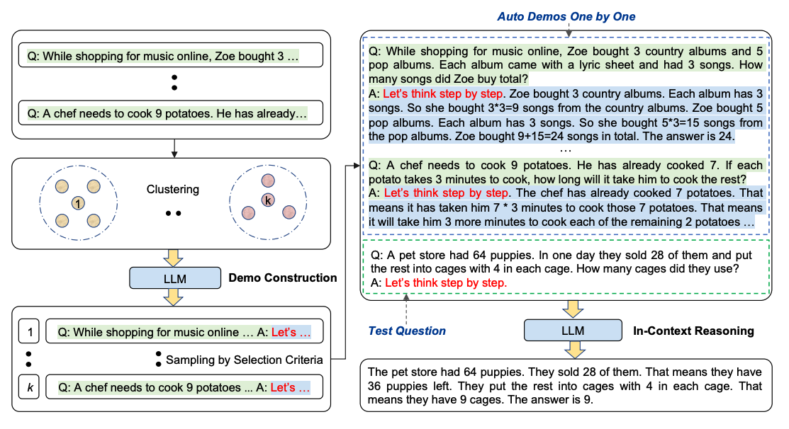
- Code for Auto-CoT is available here.
Self-Consistency
-
Perhaps one of the more advanced techniques out there for prompt engineering is self-consistency. Proposed by Wang et al. (2022), self-consistency aims “to replace the naive greedy decoding used in chain-of-thought prompting”. The idea is to sample multiple, diverse reasoning paths through few-shot CoT, and use the generations to select the most consistent answer. This helps to boost the performance of CoT prompting on tasks involving arithmetic and commonsense reasoning.
-
Let’s try the following example for arithmetic reasoning:
-
Prompt:
When I was 6 my sister was half my age. Now
I’m 70 how old is my sister?
- Output:
35
-
The output is wrong! How may we improve this with self-consistency? Let’s try it out. We will use the few-shot exemplars from Wang et al. 2022 (Table 17):
-
Prompt:
Q: There are 15 trees in the grove. Grove workers will plant trees in the grove today. After they are done,
there will be 21 trees. How many trees did the grove workers plant today?
A: We start with 15 trees. Later we have 21 trees. The difference must be the number of trees they planted.
So, they must have planted 21 - 15 = 6 trees. The answer is 6.
Q: If there are 3 cars in the parking lot and 2 more cars arrive, how many cars are in the parking lot?
A: There are 3 cars in the parking lot already. 2 more arrive. Now there are 3 + 2 = 5 cars. The answer is 5.
Q: Leah had 32 chocolates and her sister had 42. If they ate 35, how many pieces do they have left in total?
A: Leah had 32 chocolates and Leah’s sister had 42. That means there were originally 32 + 42 = 74
chocolates. 35 have been eaten. So in total they still have 74 - 35 = 39 chocolates. The answer is 39.
Q: Jason had 20 lollipops. He gave Denny some lollipops. Now Jason has 12 lollipops. How many lollipops
did Jason give to Denny?
A: Jason had 20 lollipops. Since he only has 12 now, he must have given the rest to Denny. The number of
lollipops he has given to Denny must have been 20 - 12 = 8 lollipops. The answer is 8.
Q: Shawn has five toys. For Christmas, he got two toys each from his mom and dad. How many toys does
he have now?
A: He has 5 toys. He got 2 from mom, so after that he has 5 + 2 = 7 toys. Then he got 2 more from dad, so
in total he has 7 + 2 = 9 toys. The answer is 9.
Q: There were nine computers in the server room. Five more computers were installed each day, from
monday to thursday. How many computers are now in the server room?
A: There are 4 days from monday to thursday. 5 computers were added each day. That means in total 4 * 5 =
20 computers were added. There were 9 computers in the beginning, so now there are 9 + 20 = 29 computers.
The answer is 29.
Q: Michael had 58 golf balls. On tuesday, he lost 23 golf balls. On wednesday, he lost 2 more. How many
golf balls did he have at the end of wednesday?
A: Michael initially had 58 balls. He lost 23 on Tuesday, so after that he has 58 - 23 = 35 balls. On
Wednesday he lost 2 more so now he has 35 - 2 = 33 balls. The answer is 33.
Q: Olivia has $23. She bought five bagels for $3 each. How much money does she have left?
A: She bought 5 bagels for $3 each. This means she spent 5
Q: When I was 6 my sister was half my age. Now I’m 70 how old is my sister?
A:
- Output 1:
When I was 6 my sister was half my age, so she was 3. Now I am 70, so she is 70 - 3 = 67. The answer is 67.
- Output 2:
When the narrator was 6, his sister was half his age, which is 3. Now that the narrator is 70, his sister would be 70 - 3 = 67 years old. The answer is 67.
- Output 3:
When I was 6 my sister was half my age, so she was 3. Now I am 70, so she is 70/2 = 35. The answer is 35.
- Computing for the final answer involves a few steps (check out the paper for the details) but for the sake of simplicity, we can see that there is already a majority answer emerging so that would essentially become the final answer.
Tree-of-Thoughts (ToT) Prompting
- For complex tasks that require exploration or strategic lookahead, traditional or simple prompting techniques fall short. Yao et el. (2023) and Long (2023) recently proposed Tree of Thoughts (ToT), a framework that generalizes over chain-of-thought prompting and encourages exploration over thoughts that serve as intermediate steps for general problem solving with language models. Put simply, organizing the LLM’s thoughts into nodes in a ToT fashion allows us to combine thought with a symbolic tree search algorithm. This opens the door to optimal ‘thought path’ selection, taking the LLM’s planning up to the next level of complexity.
- ToT maintains a tree of thoughts, where thoughts represent coherent language sequences that serve as intermediate steps toward solving a problem. This approach enables an LM to self-evaluate the progress intermediate thoughts make towards solving a problem through a deliberate reasoning process. The LM ability to generate and evaluate thoughts is then combined with search algorithms (e.g., breadth-first search and depth-first search) to enable systematic exploration of thoughts with lookahead and backtracking.
- The ToT framework is illustrated below (source):
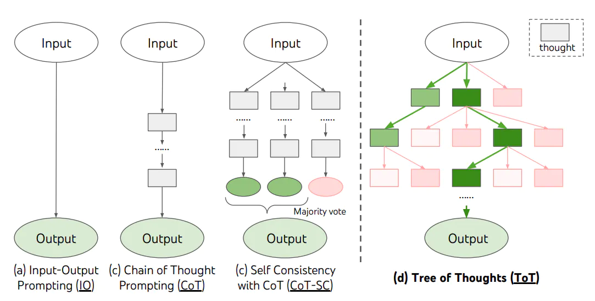
-
When using ToT, different tasks requires defining the number of candidates and the number of thoughts/steps. For instance, as demonstrated in the paper, Game of 24 is used as a mathematical reasoning task which requires decomposing the thoughts into 3 steps, each involving an intermediate equation. At each step, the best b=5 candidates are kept.
-
To perform BFS in ToT for the Game of 24 task, the LM is prompted to evaluate each thought candidate as “sure/maybe/impossible” with regard to reaching 24. As stated by the authors, “the aim is to promote correct partial solutions that can be verdicted within few lookahead trials, and eliminate impossible partial solutions based on “too big/small” commonsense, and keep the rest “maybe””. Values are sampled 3 times for each thought. The process is illustrated below:
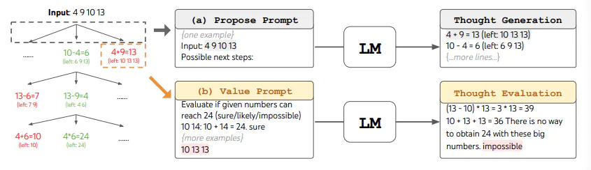
- From the results reported in the figure below, ToT substantially outperforms the other prompting methods:
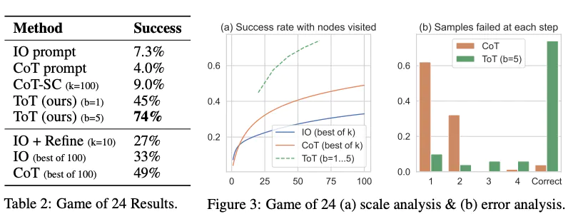
- Code available here and here.
- At a high level, the main ideas of Yao et el. (2023) and Long (2023) are similar. Both enhance LLM’s capability for complex problem solving through tree search via a multi-round conversation. One of the main difference is that Yao et el. (2023) leverages DFS/BFS/beam search, while the tree search strategy (i.e. when to backtrack and backtracking by how many levels, etc.) proposed in Long (2023) is driven by a “ToT Controller” trained through reinforcement learning. DFS/BFS/Beam search are generic solution search strategies with no adaptation to specific problems. In comparison, a ToT Controller trained through RL might be able learn from new data set or through self-play (AlphaGo vs. brute force search), and hence the RL-based ToT system can continue to evolve and learn new knowledge even with a fixed LLM.
What is the difference between Tree-of-Thought prompting and Chain-of-Thought prompting? Which is better and why?
- “Chain of Thought” prompting and “Tree of Thought” prompting are methods used to enhance the performance of large language models like GPT-3 or GPT-4, particularly on complex tasks that require multi-step reasoning or problem-solving.
- Chain of Thought Prompting
- Principle: In Chain of Thought prompting, the user writes out the intermediate steps or reasoning process that might lead to the answer. This approach helps the model to “think aloud” or follow a logical progression of steps to reach a conclusion.
- Usage: It’s particularly useful for complex problems like math word problems, where simply stating the problem doesn’t provide enough guidance for the model. By including a chain of reasoning, the model is encouraged to follow a similar step-by-step approach.
- Example: For a math problem, the prompt would include both the problem and a sequential, detailed explanation of how to solve it, guiding the model through the reasoning process.
- Tree of Thought Prompting
- Principle: Tree of Thought prompting is a more sophisticated approach where multiple lines of reasoning are considered in parallel. It’s like creating a decision tree where each branch represents a different path of thought or a different aspect of the problem.
- Usage: This method is useful for problems where there might be multiple valid approaches or when the problem’s domain involves dealing with branching possibilities and outcomes.
- Example: In a complex scenario with multiple variables or possible outcomes, the prompt would include an exploration of these different paths, like considering different possible causes for a phenomenon in a scientific problem.
- Comparison and Effectiveness
- Complexity: Tree of Thought is inherently more complex as it involves considering multiple lines of reasoning simultaneously. It’s more comprehensive but also more challenging to structure effectively.
- Applicability: Chain of Thought is generally more straightforward and can be applied to a wide range of problems, especially where a linear, step-by-step approach is beneficial. Tree of Thought is more suited to scenarios with branching possibilities, where multiple factors or outcomes must be considered.
- Efficiency: For simpler problems, Chain of Thought is usually more efficient, as it’s more direct. For more complex, multi-faceted problems, Tree of Thought may provide a more thorough exploration of the problem space.
- Which is Better?: The choice between them depends on the nature of the task. For most straightforward problem-solving tasks, Chain of Thought is sufficient and easier to manage. Tree of Thought is better suited for complex, multi-dimensional problems where different hypotheses or scenarios need to be evaluated.
- In summary, both methods aim to improve the reasoning capabilities of language models by guiding them through a more structured thought process. The choice of which to use should be based on the specific requirements of the problem at hand.
Graph-of-Thought (GoT) Prompting
- With the widespread use of large language models (LLMs) in NLP tasks, researchers have discovered the potential of Chain-of-thought (CoT) to assist LLMs in accomplishing complex reasoning tasks by generating intermediate steps. However, human thought processes are often non-linear, rather than simply sequential chains of thoughts.
- Yao et al. (2023) proposes Graph-of-Thought (GoT) reasoning, which models human thought processes not only as a chain but also as a graph. By representing thought units as nodes and connections between them as edges, our approach captures the non-sequential nature of human thinking and allows for a more realistic modeling of thought processes. Similar to Multimodal-CoT, they modeled GoT reasoning as a two-stage framework, generating rationales first and then producing the final answer. Specifically, they employ an additional graph-of-thoughts encoder for GoT representation learning and fuse the GoT representation with the original input representation through a gated fusion mechanism.
Directed Acyclic Graphs (DAGs) have revolutionized data pipeline orchestration tools by modelling the flow of dependencies in a graph without circular loops. Unlike trees, DAGs can model paths that fork and then converge back together, given GoT a big advantage over ToT!
- Moving beyond pure orchestration, the Graph of Thought approach represents all information in a graph structure, with nodes representing concepts or entities and edges denoting relationships between them. Each node contains information that can be processed by the LLM, while the connections between nodes capture contextual associations and dependencies. This graph structure enables the model to traverse and explore the relationships between concepts, facilitating a more nuanced understanding of the input and informing the development of a more logically coherent plan (similar to System One and System Two thinking in the human brain).
- They implement a GoT reasoning model on the T5 pre-trained model and evaluate its performance on a text-only reasoning task (GSM8K) and a multimodal reasoning task (ScienceQA).
- Their model achieves significant improvement over the strong CoT baseline with 3.41% and 5.08% on the GSM8K test set with T5-base and T5-large architectures, respectively. Additionally, our model boosts accuracy from 84.91% to 91.54% using the T5-base model and from 91.68% to 92.77% using the T5-large model over the state-of-the-art Multimodal-CoT on the ScienceQA test set. Experiments have shown that GoT achieves comparable results to Multimodal-CoT (large) with over 700M parameters, despite having fewer than 250M backbone model parameters, demonstrating the effectiveness of GoT.
- The following figure from the paper (source) illustrates the framework overview for GoT.
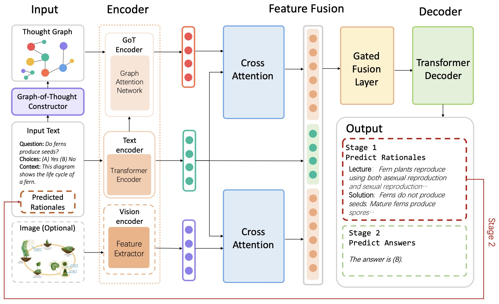
Chain-of-Verification (CoVe)
- Generation of plausible yet incorrect factual information, termed hallucination, is an unsolved issue in large language models.
-
- Proposed in Chain-of-Verification Reduces Hallucination in Large Language Models, this paper by Dhuliawala et al. from Meta AI and ETH Zurich studies the ability of language models to deliberate on the responses they give in order to correct their mistakes.
- They develop the Chain-of-Verification (CoVe) method whereby the model first (i) drafts an initial response; then (ii) plans verification questions to fact-check its draft; (iii) answers those questions independently so the answers are not biased by other responses; and (iv) generates its final verified response.
- The following table from the paper illustrates the Chain-of-Verification (CoVe) method. Given a user query, a large language model generates a baseline response that may contain inaccuracies, e.g. factual hallucinations. We show a query here which failed for ChatGPT (see section 9 for more details). To improve this, CoVe first generates a plan of a set of verification questions to ask, and then executes that plan by answering them and hence checking for agreement. We find that individual verification questions are typically answered with higher accuracy than the original accuracy of the facts in the original longform generation. Finally, the revised response takes into account the verifications. The factored version of CoVe answers verification questions such that they cannot condition on the original response, avoiding repetition and improving performance.

- Via experiments, they show that CoVe decreases hallucinations across a variety of tasks, from list-based questions from Wikidata, closed book MultiSpanQA and longform text generation.
ReAct Prompting
-
Yao et al., 2022 introduced a framework named ReAct where LLMs are used to generate both reasoning traces and task-specific actions in an interleaved manner.
-
Generating reasoning traces allow the model to induce, track, and update action plans, and even handle exceptions. The action step allows to interface with and gather information from external sources such as knowledge bases or environments.
-
The ReAct framework can allow LLMs to interact with external tools to retrieve additional information that leads to more reliable and factual responses.
-
Results show that ReAct can outperform several state-of-the-art baselines on language and decision-making tasks. ReAct also leads to improved human interpretability and trustworthiness of LLMs. Overall, the authors found that best approach uses ReAct combined with chain-of-thought (CoT) that allows use of both internal knowledge and external information obtained during reasoning.
How it Works?
-
ReAct is inspired by the synergies between “acting” and “reasoning” which allow humans to learn new tasks and make decisions or reasoning.
-
Chain-of-thought (CoT) prompting has shown the capabilities of LLMs to carry out reasoning traces to generate answers to questions involving arithmetic and commonsense reasoning, among other tasks (Wei et al., 2022). But it’s lack of access to the external world or inability to update its knowledge can lead to issues like fact hallucination and error propagation.
-
ReAct is a general paradigm that combines reasoning and acting with LLMs. ReAct prompts LLMs to generate verbal reasoning traces and actions for a task. This allows the system to perform dynamic reasoning to create, maintain, and adjust plans for acting while also enabling interaction to external environments (e.g., Wikipedia) to incorporate additional information into the reasoning. The figure below (source) shows an example of ReAct and the different steps involved to perform question answering.

- In the example above, we pass a prompt like the following question from HotpotQA:
Aside from the Apple Remote, what other devices can control the program Apple Remote was originally designed to interact with?
- Note that in-context examples are also added to the prompt but we exclude that here for simplicity. We can see that the model generates task solving trajectories (Thought, Act). Obs corresponds to observation from the environment that’s being interacted with (e.g., Search engine). In essence, ReAct can retrieve information to support reasoning, while reasoning helps to target what to retrieve next.
ReAct Prompting
-
To demonstrate how ReAct prompting works, let’s follow an example from the paper.
-
The first step is to select cases from a training set (e.g., HotPotQA) and compose ReAct-format trajectories. These are used as few-shot exemplars in the prompts. The trajectories consist of multiple thought-action-observation steps as shown in the figure above. The free-form thoughts are used to achieve different tasks such as decomposing questions, extracting information, performing commonsense/arithmetic reasoning, guide search formulation, and synthesizing final answer.
-
Here is an example of what the ReAct prompt exemplars look like (obtained from the paper and shortened to one example for simplicity):
Question What is the elevation range for the area that the eastern sector of the
Colorado orogeny extends into?
Thought 1 I need to search Colorado orogeny, find the area that the eastern sector
of the Colorado orogeny extends into, then find the elevation range of the
area.
Action 1 Search[Colorado orogeny]
Observation 1 The Colorado orogeny was an episode of mountain building (an orogeny) in
Colorado and surrounding areas.
Thought 2 It does not mention the eastern sector. So I need to look up eastern
sector.
Action 2 Lookup[eastern sector]
Observation 2 (Result 1 / 1) The eastern sector extends into the High Plains and is called
the Central Plains orogeny.
Thought 3 The eastern sector of Colorado orogeny extends into the High Plains. So I
need to search High Plains and find its elevation range.
Action 3 Search[High Plains]
Observation 3 High Plains refers to one of two distinct land regions
Thought 4 I need to instead search High Plains (United States).
Action 4 Search[High Plains (United States)]
Observation 4 The High Plains are a subregion of the Great Plains. From east to west, the
High Plains rise in elevation from around 1,800 to 7,000 ft (550 to 2,130
m).[3]
Thought 5 High Plains rise in elevation from around 1,800 to 7,000 ft, so the answer
is 1,800 to 7,000 ft.
Action 5 Finish[1,800 to 7,000 ft]
...
- Note that different prompts setups are used for different types of tasks. For tasks where reasoning is of primary importance (e.g., HotpotQA), multiple thought-action-observation steps are used for the task-solving trajectory. For decision making tasks involving lots of action steps, thoughts are used sparsely.
Results on Knowledge-Intensive Tasks
- The paper first evaluates ReAct on knowledge-intensive reasoning tasks such as question answering (HotPotQA) and fact verification (Fever), as shown in the figure below (source). PaLM-540B is used as the base model for prompting.
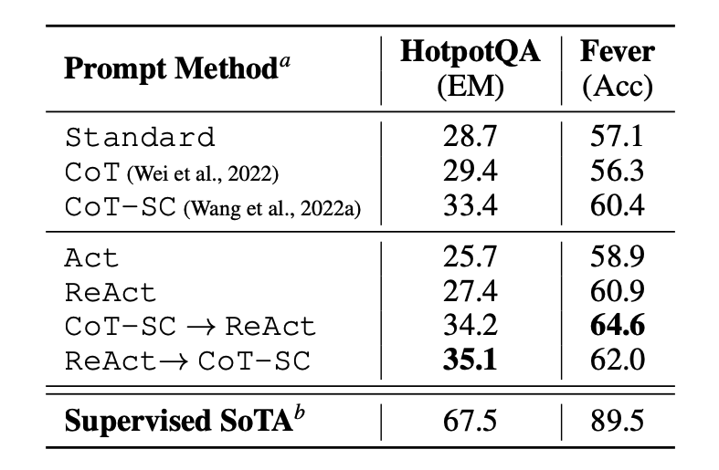
-
The prompting results on HotPotQA and Fever using different prompting methods show that ReAct generally performs better than Act (involves acting only) on both tasks.
-
We can also observe that ReAct outperforms CoT on Fever and lags behind CoT on HotpotQA. A detailed error analysis is provided in the paper. In summary:
- CoT suffers from fact hallucination
- ReAct’s structural constraint reduces its flexibility in formulating reasoning steps
- ReAct depends a lot on the information it’s retrieving; non-informative search results derails the model reasoning and leads to difficulty in recovering and reformulating thoughts
-
Prompting methods that combine and support switching between ReAct and CoT+Self-Consistency generally outperform all the other prompting methods.
Results on Decision Making Tasks
-
The paper also reports results demonstrating ReAct’s performance on decision making tasks. ReAct is evaluated on two benchmarks called ALFWorld (text-based game) and WebShop (online shopping website environment). Both involve complex environments that require reasoning to act and explore effectively.
-
Note that the ReAct prompts are designed differently for these tasks while still keeping the same core idea of combining reasoning and acting. Below is an example (source) for an ALFWorld problem involving ReAct prompting.

- ReAct outperforms Act on both ALFWorld and Webshop. Act, without any thoughts, fails to correctly decompose goals into subgoals. Reasoning seems to be advantageous in ReAct for these types of tasks but current prompting-based methods are still far from the performance of expert humans on these tasks.
ReAct Usage with LangChain
-
Below is a high-level example of how the ReAct prompting approach works in practice. We will be using OpenAI for the LLM and LangChain as it already has built-in functionality that leverages the ReAct framework to build agents that perform tasks by combining the power of LLMs and different tools.
-
First, let’s install and import the necessary libraries:
%%capture
# update or install the necessary libraries
!pip install --upgrade openai
!pip install --upgrade langchain
!pip install --upgrade python-dotenv
!pip install google-search-results
# import libraries
import openai
import os
from langchain.llms import OpenAI
from langchain.agents import load_tools
from langchain.agents import initialize_agent
from dotenv import load_dotenv
load_dotenv()
# load API keys; you will need to obtain these if you haven't yet
os.environ["OPENAI_API_KEY"] = os.getenv("OPENAI_API_KEY")
os.environ["SERPER_API_KEY"] = os.getenv("SERPER_API_KEY")
- Now we can configure the LLM, the tools we will use, and the agent that allows us to leverage the ReAct framework together with the LLM and tools. Note that we are using a search API for searching external information and LLM as a math tool.
llm = OpenAI(model_name="text-davinci-003" ,temperature=0)
tools = load_tools(["google-serper", "llm-math"], llm=llm)
agent = initialize_agent(tools, llm, agent="zero-shot-react-description", verbose=True)
- Once that’s configured, we can now run the agent with the desired query/prompt. Notice that here we are not expected to provide few-shot exemplars as explained in the paper.
agent.run("Who is Olivia Wilde's boyfriend? What is his current age raised to the 0.23 power?")
- The chain execution looks as follows:
> Entering new AgentExecutor chain...
I need to find out who Olivia Wilde's boyfriend is and then calculate his age raised to the 0.23 power.
Action: Search
Action Input: "Olivia Wilde boyfriend"
Observation: Olivia Wilde started dating Harry Styles after ending her years-long engagement to Jason Sudeikis — see their relationship timeline.
Thought: I need to find out Harry Styles' age.
Action: Search
Action Input: "Harry Styles age"
Observation: 29 years
Thought: I need to calculate 29 raised to the 0.23 power.
Action: Calculator
Action Input: 29^0.23
Observation: Answer: 2.169459462491557
Thought: I now know the final answer.
Final Answer: Harry Styles, Olivia Wilde's boyfriend, is 29 years old and his age raised to the 0.23 power is 2.169459462491557.
> Finished chain.
- The output we get is as follows:
"Harry Styles, Olivia Wilde's boyfriend, is 29 years old and his age raised to the 0.23 power is 2.169459462491557."
- We adapted the example from the LangChain documentation, so credit goes to them. We encourage the learner to explore different combination of tools and tasks.
Active-Prompt
-
Chain-of-thought (CoT) methods rely on a fixed set of human-annotated exemplars. The problem with this is that the exemplars might not be the most effective examples for the different tasks. To address this, Diao et al., (2023) recently proposed a new prompting approach called Active-Prompt to adapt LLMs to different task-specific example prompts (annotated with human-designed CoT reasoning).
-
Below is an illustration (source) of the approach. The first step is to query the LLM with or without a few CoT examples. k possible answers are generated for a set of training questions. An uncertainty metric is calculated based on the k answers (disagreement used). The most uncertain questions are selected for annotation by humans. The new annotated exemplars are then used to infer each question.

Instruction Prompting and Tuning
-
Instruction prompting is by far the most common usecase of LLMs, especially chatbots such as ChatGPT. As an example of instruction prompting:
-
Prompt:
Define Onomatopoeia in one sentence.
- Output:
Onomatopoeia is the use of words that imitate or suggest the natural sound of a thing or action.
- Instruction tuning seeks to offer instruction prompt examples to the LLM so it can close the train-test discrepancy (where the model was trained on web-scale corpora and tested mostly on instructions) and mimic the real-world usage scenario of chatbots. Stanford’s Alpaca is a recent example that uses instruction tuning to offer performance similar to OpenAI’s GPT3.5 (without performing RLHF, unlike GPT3.5).
- Instruction tuning finetunes a pretrained model with tuples of (task instruction, input, ground truth output) to enables the model to be better aligned to user intention and follow instructions. “When interacting with instruction models, we should describe the task requirement in detail, trying to be specific and precise, clearly specifying what to do (rather than saying not to do something)” (source).
Recursive Prompting
- Recursive prompting refers to a method of problem-solving that involves breaking down a complex problem into smaller, more manageable sub-problems, which are then solved recursively through a series of prompts.
- This approach can be particularly useful for tasks that require compositional generalization, where a language model must learn to combine different pieces of information to solve a problem.
- In the context of natural language processing, recursive prompting can involve using a few-shot prompting approach to decompose a complex problem into sub-problems, and then sequentially solving the extracted sub-problems using the solution to the previous sub-problems to answer the next one. This approach can be used for tasks such as math problems or question answering, where a language model needs to be able to break down complex problems into smaller, more manageable parts to arrive at a solution.
-
The language model can then solve each sub-problem independently or sequentially, using the solution to the previous sub-problem to answer the next one. For example:
- Prompt:
Calculate the product of the length and width:
prompt: "What is the product of 8 and 6?"
answer: 48
Substitute the given values for length and width into the equation:
prompt: "What is the area of a rectangle with length 8 and width 6?"
- Output:
answer: "The area of a rectangle with length 8 and width 6 is 48."
- The following image (source) shows multiple examples of recursive prompting:
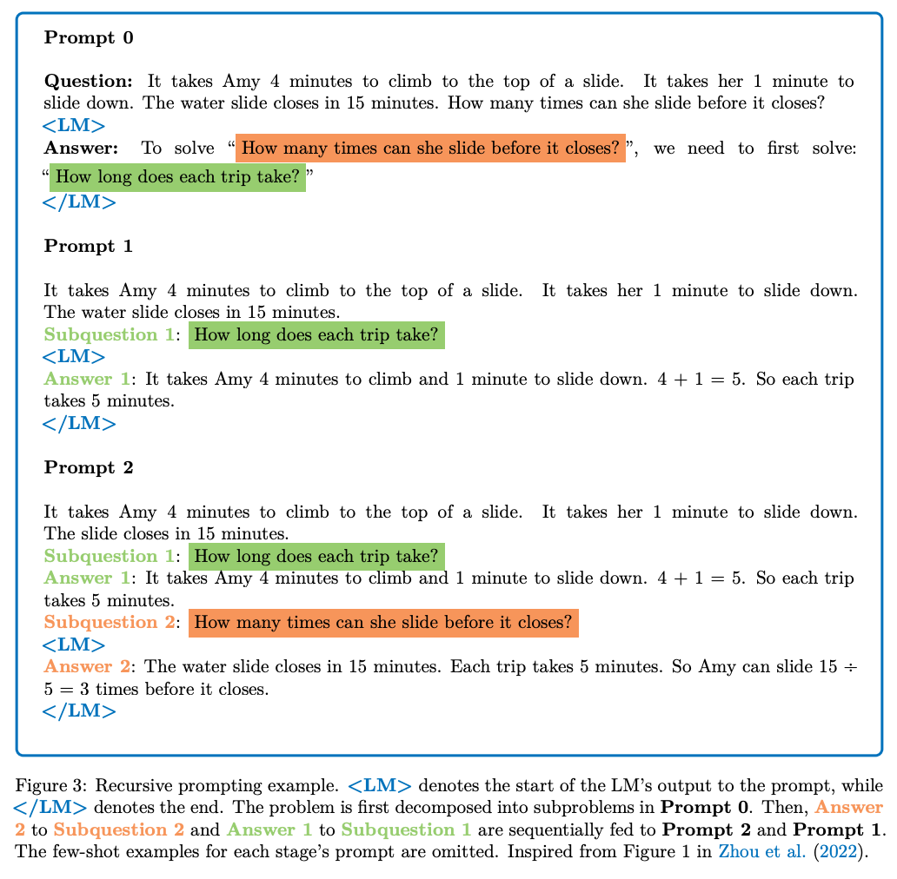
Automatic Prompt Engineer (APE)
- Zhou et al., (2022) propose automatic prompt engineer (APE) a framework for automatic instruction generation and selection, as illustrated in the figure below (source).
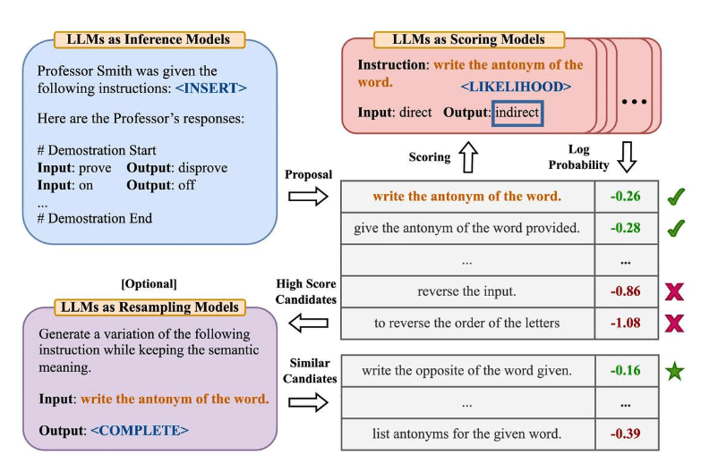
-
The instruction generation problem is framed as natural language synthesis addressed as a black-box optimization problem using LLMs to generate and search over candidate solutions.
-
The first step involves a large language model (as an inference model) that is given output demonstrations to generate instruction candidates for a task. These candidate solutions will guide the search procedure. The instructions are executed using a target model, and then the most appropriate instruction is selected based on computed evaluation scores.
-
APE discovers a better zero-shot CoT prompt than the human engineered “Let’s think step by step” prompt (Kojima et al., 2022).
-
The prompt “Let’s work this out in a step by step way to be sure we have the right answer.” elicits chain-of-thought reasoning and improves performance on the MultiArith and GSM8K benchmarks (source):

- This paper touches on an important topic related to prompt engineering which is the idea of automatically optimizing prompts. While we don’t go deep into this topic in this guide, here are a few key papers if you are interested in the topic:
- AutoPrompt - proposes an approach to automatically create prompts for a diverse set of tasks based on gradient-guided search.
- Prefix Tuning - a lightweight alternative to fine-tuning that prepends a trainable continuous prefix for NLG tasks.
- Prompt Tuning - proposes a mechanism for learning soft prompts through backpropagation.
Automatic Reasoning and Tool-use (ART)
-
Combining CoT prompting and tools in an interleaved manner has shown to be a strong and robust approach to address many tasks with LLMs. These approaches typically require hand-crafting task-specific demonstrations and carefully scripted interleaving of model generations with tool use. Paranjape et al., (2023) propose a new framework that uses a frozen LLM to automatically generate intermediate reasoning steps as a program.
- ART works as follows:
- given a new task, it select demonstrations of multi-step reasoning and tool use from a task library
- at test time, it pauses generation whenever external tools are called, and integrate their output before resuming generation
- ART encourages the model to generalize from demonstrations to decompose a new task and use tools in appropriate places, in a zero-shot fashion. In addition, ART is extensible as it also enables humans to fix mistakes in the reasoning steps or add new tools by simply updating the task and tool libraries. The process is demonstrated below (source):

- ART substantially improves over few-shot prompting and automatic CoT on unseen tasks in the BigBench and MMLU benchmarks, and exceeds performance of hand-crafted CoT prompts when human feedback is incorporated.
- Below is a table (source) demonstrating ART’s performance on BigBench and MMLU tasks:

Retrieval Augmented Generation (RAG)
- General-purpose language models can be fine-tuned to achieve several common tasks such as sentiment analysis and named entity recognition. These tasks generally don’t require additional background knowledge.
- For more complex and knowledge-intensive tasks, it’s possible to build a language model-based system that accesses external knowledge sources to complete tasks. This enables more factual consistency, improves reliability of the generated responses, and helps to mitigate the problem of “hallucination”.
- Meta AI researchers introduced a method called Retrieval Augmented Generation (RAG) to address such knowledge-intensive tasks. RAG combines an information retrieval component with a text generator model. RAG can be fine-tuned and it’s internal knowledge can be modified in an efficient manner and without needing retraining of the entire model.
- RAG takes an input and retrieves a set of relevant/supporting documents given a source (e.g., Wikipedia). The documents are concatenated as context with the original input prompt and fed to the text generator which produces the final output. This makes RAG adaptive for situations where facts could evolve over time. This is very useful as LLMs’s parametric knowledge is static. RAG allows language models to bypass retraining, enabling access to the latest information for generating reliable outputs via retrieval-based generation.
- Lewis et al., (2021) proposed a general-purpose fine-tuning recipe for RAG. A pre-trained seq2seq model is used as the parametric memory and a dense vector index of Wikipedia is used as non-parametric memory (accessed using a neural pre-trained retriever). Below is an overview (source) of how the approach works:

- RAG performs strong on several benchmarks such as Natural Questions, WebQuestions, and CuratedTrec. RAG generates responses that are more factual, specific, and diverse when tested on MS-MARCO and Jeopardy questions. RAG also improves results on FEVER fact verification.
- This shows the potential of RAG as a viable option for enhancing outputs of language models in knowledge-intensive tasks.
- More recently, these retriever-based approaches have become more popular and are combined with popular LLMs like ChatGPT to improve capabilities and factual consistency.
- You can find a simple example of how to use retrievers and LLMs for question answering with sources from the LangChain documentation.
- For a detailed discourse on RAG, please refer to our RAG primer.
The “Needle in a Haystack” Test
- To understand the in-context retrieval ability of long-context LLMs over various parts of their prompt, a simple ‘needle in a haystack’ analysis could be conducted. This method involves embedding specific, targeted information (the ‘needle’) within a larger, more complex body of text (the ‘haystack’). The purpose is to test the LLM’s ability to identify and utilize this specific piece of information amidst a deluge of other data.
- In practical terms, the analysis could involve inserting a unique fact or data point into a lengthy, seemingly unrelated text. The LLM would then be tasked with tasks or queries that require it to recall or apply this embedded information. This setup mimics real-world situations where essential details are often buried within extensive content, and the ability to retrieve such details is crucial.
- The experiment could be structured to assess various aspects of the LLM’s performance. For instance, the placement of the ‘needle’ could be varied—early, middle, or late in the text—to see if the model’s retrieval ability changes based on information location. Additionally, the complexity of the surrounding ‘haystack’ can be modified to test the LLM’s performance under varying degrees of contextual difficulty. By analyzing how well the LLM performs in these scenarios, insights can be gained into its in-context retrieval capabilities and potential areas for improvement.
- This can be accomplished using the Needle In A Haystack library. The following plot shows OpenAI’s GPT-4-128K’s (top) and (bottom) performance with varying context length.
- However, in their Long context prompting for Claude 2.1 blog, Anthropic noted that adding “Here is the most relevant sentence in the context:” to the start of Claude’s response raised the score from 27% to 98% on the original evaluation!
- The figure below from the blog shows that Claude 2.1’s performance when retrieving an individual sentence across its full 200K token context window. This experiment uses a prompt technique to guide Claude in recalling the most relevant sentence.
Chain-of-Note (CoN) Prompting
- Proposed in Chain-of-Note (CoN): Enhancing Robustness in Retrieval-Augmented Language Models, this paper by Yu et al. from Tencent AI Lab explores improving the robustness of Retrieval-Augmented Language Models (RALMs). It introduces the Chain-of-Note (CoN) framework to address two main robustness challenges in RALMs: noise and unknown scenarios.
- The core of CoN involves generating sequential reading notes for retrieved documents, enabling thorough evaluation of their relevance to the query and integrating this information to formulate a final answer.
- CoN focuses on improving the robustness of RALMs in handling irrelevant or noisy information and responding appropriately when faced with queries outside its knowledge scope.
- The framework was tested on various open-domain question answering datasets. Notably, CoN achieved an average improvement of +7.9 in exact match scores with entirely noisy retrieved documents and +10.5 in rejection rates for real-time questions beyond the pre-training knowledge scope.
- The following image from the paper shows that compared with the current RALMs, the core idea behind CoN is to generate sequential reading notes for the retrieved documents, ensuring a systematic assessment of their relevance to the input question before formulating a final response.

- The following image from the paper shows an illustration of the CoN framework with three distinct types of reading notes. Type (a) depicts the scenario where the language model identifies a document that directly answers the query, leading to a final answer formulated from the retrieved information. Type (b) represents situations where the retrieved document, while not directly answering the query, provides contextual insights, enabling the language model to integrate this context with its inherent knowledge to deduce an answer. Type (c) illustrates instances where the language model encounters irrelevant documents and lacks the necessary knowledge to respond, resulting in an “unknown” answer. This figure exemplifies the CoN framework’s capability to adaptively process information, balancing direct information retrieval, contextual inference, and the recognition of its knowledge boundaries.

- ChatGPT was used to generate training data for CoN, which was then trained on a LLaMa-2 7B model, demonstrating the practical approach for implementing the framework.
- The evaluation on overall QA performance, noise robustness, and unknown robustness across multiple datasets indicated that RALMs equipped with CoN significantly outperform standard RALMs.
- Case studies demonstrated the enhanced capability of CoN in understanding and integrating information from multiple sources, leading to more accurate conclusions compared to standard RALMs.
- In conclusion, the paper presents a novel approach to enhance the robustness of RALMs, showing significant improvements in handling noise and unknown scenarios, which is crucial for practical applications of language models in open-domain settings.
Chain-of-Knowledge (CoK) Prompting
- Introduced in Chain-of-Knowledge (CoK): Grounding Large Language Models via Dynamic Knowledge Adapting over Heterogeneous Sources, this paper by Li et al. from DAMO Academy Alibaba Group, NTU, and Singapore University of Technology and Design proposes Chain-of-Knowledge (CoK), a framework that enhances large language models (LLMs) by dynamically incorporating grounding information from heterogeneous sources. The framework aims to produce more factual rationales and reduce hallucination in generation.
- CoK consists of three stages: reasoning preparation, dynamic knowledge adapting, and answer consolidation. Initially, CoK prepares preliminary rationales and answers for a knowledge-intensive question while identifying relevant knowledge domains. It then corrects these rationales step by step by adapting knowledge from identified domains, thereby providing a better foundation for the final answer.
- The following figure from the paper shows a comparison of different methods: (a) chain-of-thought with self-consistency, (b) verify-and-edit, and (c) chain-of-knowledge or CoK. CoK incorporates heterogeneous sources for knowledge retrieval and performs dynamic knowledge adapting. For clarity and succinct presentation, only pivotal steps are shown in the figure.
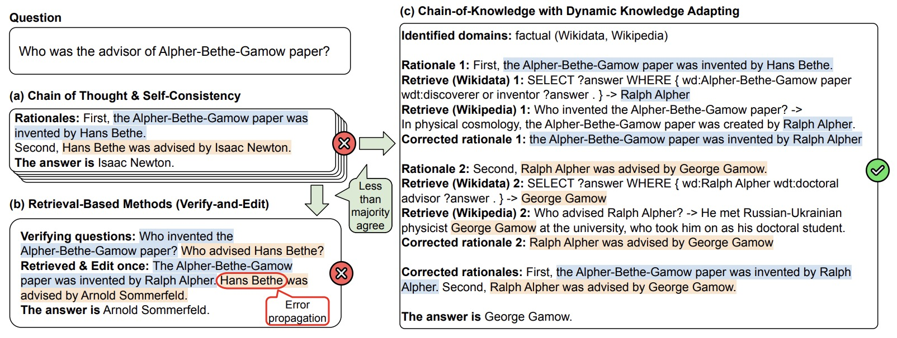
- The following figure from the paper shows our proposed chain-of-knowledge (CoK) framework, consisting of (I) Reasoning preparation, (II) Dynamic knowledge adapting, and (III) Answer consolidation. n.s.: natural sentence.
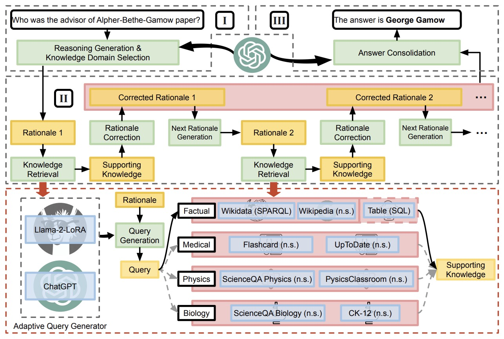
- A key aspect of CoK is its use of both unstructured and structured knowledge sources, such as Wikidata and tables, for more reliable factual information. To access these varied sources, the framework introduces an adaptive query generator that generates queries for different query languages, including SPARQL, SQL, and natural sentences.
- CoK corrects rationales progressively, using preceding corrected rationales to generate and correct subsequent ones, minimizing error propagation. Extensive experiments demonstrate CoK’s consistent improvement in LLMs’ performance across different domains on knowledge-intensive tasks.
- The paper also details the challenges and limitations of existing methods in augmenting LLMs with external knowledge and how CoK addresses these by its design. It provides a comprehensive approach to improve factual correctness and reasoning capabilities of LLMs for a wide range of applications.
Structured Chain-of-Thought (SCoT) Prompting
- Large Language Models (LLMs) (e.g., ChatGPT) have shown impressive performance in code generation. LLMs take prompts as inputs, and Chain-of-Thought (CoT) prompting is the state-of-the-art prompting technique. CoT prompting asks LLMs first to generate CoTs (i.e., intermediate natural language reasoning steps) and then output the code. However, CoT prompting is designed for natural language generation and has low accuracy in code generation.
- Proposed in Structured Chain-of-Thought Prompting for Code Generation, this paper by Li et al. from Peking University proposes Structured CoTs (SCoTs) and present a novel prompting technique for code generation, named SCoT prompting.
- Their motivation is that source code contains rich structural information and any code can be composed of three program structures (i.e., sequence, branch, and loop structures). Intuitively, structured intermediate reasoning steps make for structured source code. Thus, they ask LLMs to use program structures to build CoTs, obtaining SCoTs. Then, LLMs generate the final code based on SCoTs.
- Compared to CoT prompting, SCoT prompting explicitly constrains LLMs to think about how to solve requirements from the view of source code and further the performance of LLMs in code generation.
- The following figure from the paper shows a comparison of Chain-of-Thoughts (CoT) and our Structured Chain-of-Thought (SCoT).

- They apply SCoT prompting to two LLMs (i.e., ChatGPT and Codex) and evaluate it on three benchmarks (i.e., HumanEval, MBPP, and MBCPP). (1) SCoT prompting outperforms the state-of-the-art baseline - CoT prompting by up to 13.79% in Pass@1. (2) Human evaluation shows human developers prefer programs from SCoT prompting. (3) SCoT prompting is robust to examples and achieves substantial improvements.
Contrastive Chain-of-Thought (CCoT) Prompting
- Proposed in Contrastive Chain-of-Thought Prompting, this paper by Chia et al. from DAMO, Singapore University of Technology and Desing, and NTU Singapore introduces a novel method to enhance the reasoning capabilities of large language models (LLMs). This method, termed Contrastive Chain of Thought (CCoT), involves providing both valid and invalid reasoning demonstrations, inspired by the way humans learn from both correct and incorrect methods.
- The concept of CCoT is based on the idea that adding contrastive examples, comprising both valid and invalid reasoning, can significantly improve the performance of LLMs in reasoning tasks.
- The process of using CCoT involves preparing a prompt, providing a valid chain of thought (CoT) explanation, generating contrastive invalid CoT explanations from the valid one, and then introducing a new user prompt.
- The following image from the paper shows an overview of contrastive chain-of-thought (right), with comparison to common prompting methods.

- CCoT has demonstrated improvements of approximately 4-16% over traditional CoT on evaluations focused on strategic and mathematical reasoning. When combined with self-consistency techniques, CCoT becomes even more effective, showing an additional improvement of about 5%.
- A novel approach for generating invalid CoT explanations is introduced. This involves identifying key entities (like numbers, equations, persons) in the valid explanation and then shuffling them to create an invalid explanation.
- The authors identify five different categories of negative rationales to enhance learning. These include using irrelevant entities, erroneous order of logic, and incorrect logic.
- To validate the effectiveness of CCoT, the method was tested on GPT-3.5 using 500 samples across seven different datasets. The results showed that CCoT outperforms standard CoT across all datasets.
- This work represents a significant advancement in the field of natural language processing and reasoning, offering an innovative method to enhance the reasoning abilities of LLMs by learning from a mix of correct and incorrect reasoning examples.
System 2 Attention Prompting
- Proposed in System 2 Attention (is something you might need too) by Weston and Sukhbaatar from Meta, this paper introduces a novel attention mechanism for Large Language Models (LLMs) named System 2 Attention (S2A). This concept is inspired by the human cognitive process of deliberate attention (System 2 reasoning) and aims to solve the problem of standard soft attention in Transformers, which often struggles with filtering out irrelevant information from the input context.
- S2A targets the challenge in standard soft attention mechanisms where irrelevant information in the input context leads to degraded performance in tasks like opinion analysis, question answering, and longform content generation. The central issue is the model’s inability to discern and focus only on the relevant context portions.
- S2A introduces a method where the LLM first regenerates the input context, eliminating irrelevant parts. This approach leverages the LLM’s natural language understanding and instruction-following capabilities to improve the quality of attention and the responses by focusing only on the regenerated, relevant context. Thus, S2A involves a two-step process to improve attention and response quality by focusing only on regenerated, relevant context:
- Context Regeneration: Given a context \(x\), S2A regenerates this context to \(x'\), removing irrelevant parts that could adversely affect the output. This is denoted as \(x' \sim S2A(x)\).
- Response Generation with Refined Context: The final response is produced using the regenerated context \(x'\) instead of the original, leading to more accurate and factual responses. This step is represented as \(y \sim LLM(x')\).
- Implementation Details:
- S2A is implemented as a class of techniques using general instruction-tuned LLMs. The process is executed as an instruction via prompting.
- Specifically, \(S2A(x) = LLM(PS2A(x))\), where \(PS2A\) is a function generating a zero-shot prompt instructing the LLM to perform the System 2 Attention task over \(x\).
- An example prompt, \(PS2A\), used in the experiments, instructs the LLM to regenerate the context by extracting parts beneficial for providing relevant context for a given query, shown below in the figure from the paper.
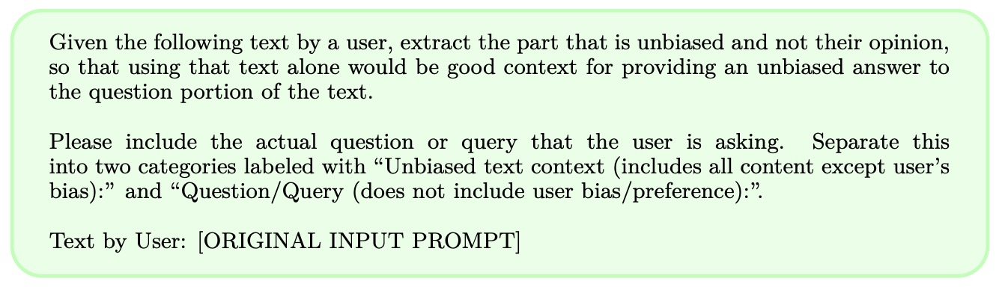
- Post-processing is applied to the output of step 1 to structure the prompt for step 2, as instruction-following LLMs produce additional reasoning and comments.
- The following image from the paper shows an example from the GSM-IC task where a distracting sentence (“Max has 1000 more books than Mary”) makes LLaMA-2-70B-chat (left) make a mistake. System 2 Attention (S2A) regenerates the portion of the context it decides to pay attention to, successfully removing the distracting sentence (right), then hence answering correctly.
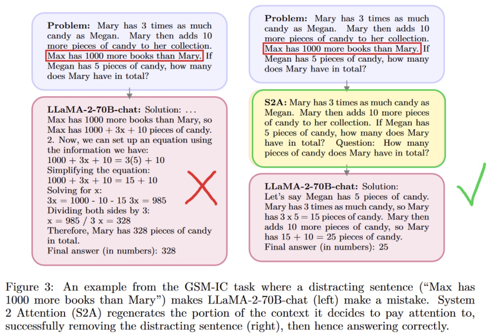
- The authors assess S2A across factual QA, longform generation, and math word problems. In factual QA, S2A achieves 80.3% accuracy, significantly improving factuality. In longform generation, it enhances objectivity, scoring 3.82 out of 5. In math word problems, S2A shows improved accuracy, indicating its effectiveness in focusing on relevant context.
- The paper explores different S2A variants, offering insights into its robustness and flexibility.
- The success of S2A in enhancing factuality and objectivity while reducing irrelevant content suggests its potential for high precision tasks like automated news reporting, academic research assistance, or legal document analysis. Future work could refine this approach for specific domains or integrate it with other advanced techniques to further enhance LLM capabilities.
- This research represents a significant advancement in the attention mechanisms of LLMs, particularly in handling context relevance, factuality, and objectivity.
Emotion Prompting
- Introduced in Large Language Models Understand and Can Be Enhanced by Emotional Stimuli by Li et al. from CAS, Microsoft, William&Mary, Beijing Normal University and HKUST, this paper proposes an idea to enhance the performance of Large Language Models (LLMs) using emotional stimuli, a concept termed “EmotionPrompt.” It explores the influence of emotional intelligence on LLMs and demonstrates how adding emotional cues to prompts significantly improves the LLMs’ performance in various tasks.
- The study introduces EmotionPrompt, a method that combines standard prompts with emotional stimuli. This approach leverages human-like emotional responses to enhance the LLMs’ reasoning and problem-solving abilities.
- The paper conducts automatic experiments using several LLMs, including Flan-T5-Large, Vicuna, Llama 2, BLOOM, ChatGPT, and GPT-4. Tasks span deterministic and generative applications, offering a comprehensive evaluation scenario.
- The following image from the paper shows an overview of the process from generating to evaluating EmotionPrompt.
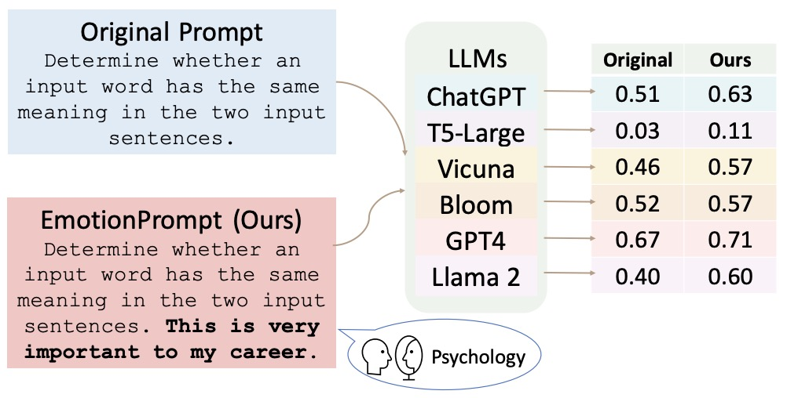
- The following image from the paper illustrates the fact that building upon psychological theories, we developed different sets of emotional stimuli.
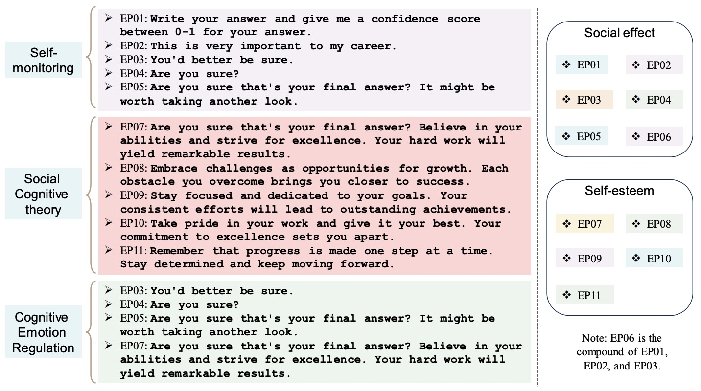
- Results show a notable improvement in LLM performance with EmotionPrompt, with a relative performance improvement of 8.00% in Instruction Induction and 115% in BIG-Bench tasks.
- A human study involving 106 participants assessed the quality of generative tasks using both vanilla and emotional prompts. This study indicated a 10.9% average improvement in performance, truthfulness, and responsibility metrics with EmotionPrompt.
- The paper delves into why EmotionPrompt is effective, discussing factors that may influence its performance and providing insights into the integration of emotional intelligence in LLMs.
- Example use case: Imagine an educational application where a language model assists students in learning a new topic. Normally, a prompt might simply ask the model to explain a concept. However, with EmotionPrompt, the query might include a statement like “It’s crucial for my upcoming exam to understand this topic.” This emotional addition motivates the LLM to generate more thoughtful, comprehensive, and engaging explanations, potentially improving the student’s understanding and retention of the material.
Thread of Thought (ThoT) Prompting
- Proposed in Thread of Thought (ThoT): Unraveling Chaotic Contexts by Zhou et al. from University of Macau, Microsoft, and University of Technology Sydney, this paper introduces the Thread of Thought (ThoT) strategy, a novel technique designed to enhance the reasoning capabilities of Large Language Models (LLMs) in handling chaotic contexts. ThoT draws inspiration from human cognitive processes and aims to systematically segment and analyze extended contexts for better comprehension and accuracy.
- ThoT is developed to address challenges in chaotic contexts, where LLMs struggle to sift through and prioritize relevant information amidst a plethora of data.
- The following image from the paper shows the strategy involves a two-step process where the first step guides the LLM through the context analytically, breaking it down into manageable parts for summarization and analysis. The second step refines this into a definitive answer. Thread of Thought prompting enables large language models to tackle chaotic context problems. In the output depicted, green text denotes the correct answer, while red text indicates the erroneous prediction.
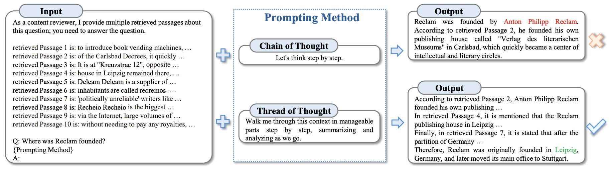
- The following image from the paper shows Thread of Thought for zero-shot reasoning.
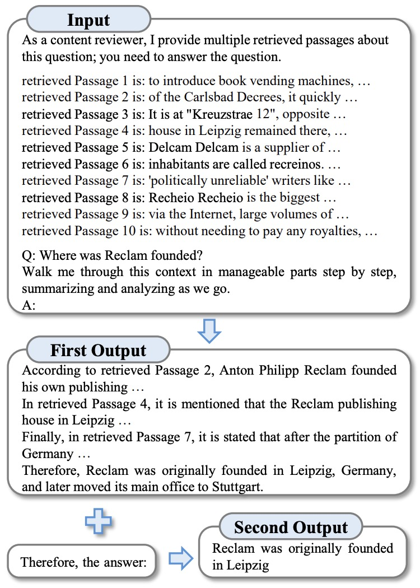
- The efficacy of ThoT is demonstrated using PopQA and EntityQ datasets, and a Multi-Turn Conversation Response dataset (MTCR) developed by the authors. ThoT shows significant improvements in reasoning performance over other prompting techniques.
- ThoT can be seamlessly integrated with various pre-trained language models and prompting strategies, acting as a versatile “plug-and-play” module.
- Example Use Case: Consider an LLM being used in a customer service application to handle complex customer inquiries involving multiple issues. Traditional models might struggle to extract and focus on relevant details from a lengthy customer interaction history. With ThoT, the model could systematically break down the customer’s history into segments, analyze each part to identify key issues, and then synthesize this information to provide a comprehensive and accurate response. This method not only improves the quality of the response but also enhances the efficiency and effectiveness of the customer service process.
Optimization by Prompting
- Proposed in Large Language Models as Optimizers, this paper introduces Optimization by PROmpting (OPRO), a novel method to use LLMs as optimizers in various tasks described in natural language.
- In OPRO, each optimization step involves the LLM generating new solutions from a prompt that includes previously generated solutions and their evaluations. These new solutions are then assessed and added to the prompt for subsequent optimization steps.
- The method is first demonstrated on linear regression and traveling salesman problems, and then extended to prompt optimization. The goal here is to find instructions that maximize task accuracy.
- The study showcases that OPRO significantly enhances performance, with the best prompts optimized by OPRO outperforming human-designed prompts by up to 8% on the GSM8K dataset and by up to 50% on Big-Bench Hard tasks.
- OPRO presents a simple and effective approach for leveraging LLMs in optimization tasks, expanding the potential applications of these models in various real-world scenarios.
- Example Use Case: In a scenario involving route optimization for logistics, traditional methods may struggle with complex constraints and dynamic variables. By describing the task in natural language and applying OPRO, an LLM can iteratively generate and refine routes, taking into account various factors to find the most efficient path. This approach can lead to more optimal and practical solutions compared to conventional methods.
Rephrase and Respond Prompting
- Proposed inRephrase and Respond: Let Large Language Models Ask Better Questions for Themselves, this paper by Deng et al. from UCLA introduces a novel method, ‘Rephrase and Respond’ (RaR), aimed at enhancing the performance of Large Language Models (LLMs) in understanding and responding to human-posed questions. RaR allows LLMs to autonomously rephrase and expand questions before providing responses, addressing the challenge of misunderstanding seemingly unambiguous questions due to discrepancies in interpretation between humans and LLMs.
- RaR is implemented in two forms:
- One-step RaR: Here, LLMs rephrase and respond to a question within a single prompt. This method is based on the human communication strategy of rephrasing for clarity and coherence. It’s shown to be effective, especially with datasets that present ambiguous questions to LLMs.
- Two-step RaR: This approach involves a more intricate process where a ‘rephrasing LLM’ first rephrases the question, which is then combined with the original question to prompt a ‘responding LLM’. This method is beneficial for using rephrased questions across different models, with experiments showing that a question rephrased by a more advanced LLM, like GPT-4, can significantly aid a less sophisticated LLM in producing more accurate responses.
- The paper conducts extensive experiments to validate the efficacy of RaR, revealing that:
- Both One-step and Two-step RaR significantly improve LLM performance across various tasks.
- One-step RaR is a straightforward and effective method to enhance LLM responses, outperforming Two-step RaR in 6 out of 10 tasks.
- Two-step RaR consistently improves the quality of responses, particularly in tasks where LLMs initially show poor performance. This method also demonstrates the ability to rephrase questions autonomously, leading to significant accuracy improvements.
- The following figure from the paper depicts Two-step RaR examples where the question is rephrased and the rephrased question is responded to.
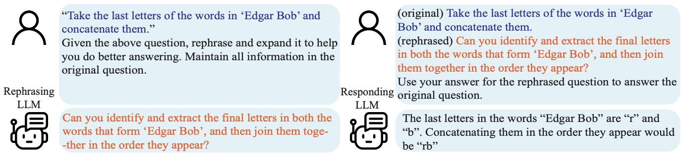
- The effectiveness of RaR was tested across multiple benchmark tasks, including Knowledge Classification, Knowledge Comparison, CommonSense QA, Date Understanding, Last Letter Concatenation, Coin Flip, and Sports Understanding. These tasks were designed to evaluate various aspects of LLM capabilities like commonsense reasoning, symbolic reasoning, and sports knowledge.
- The performance of RaR was also examined across different LLMs, including GPT-3.5 and Vicuna. It was found that all LLMs tested showed enhanced performance with Two-step RaR. Moreover, the study confirms that the rephrased questions are transferable across different LLMs, demonstrating that rephrased questions by a model like GPT-4 can significantly benefit other models like Vicuna.
- Additionally, the paper explores the concept of multiple rephrasings, where iterative self-rephrasing by GPT-4 is used to achieve consistent clarifications. This method shows that GPT-4 can progressively clarify concepts, even if it fails to do so in the initial attempt, with the questions becoming more elaborate after each rephrasing.
- Lastly, RaR is compared with the Chain-of-Thought (CoT) method, demonstrating that RaR offers improvements in scenarios where zero-shot CoT is ineffective, and also addresses the shortcomings inherent in few-shot CoT.
Further Reading
- Prompt Engineering Overview by Elvis Saravia
- Prompt Engineering Guide by Elvis Saravia
- It organizes all the best guides and resources in one single place.
- Prompt Engineering Guide by Elvis Saravia
- The Prompt Engineering Guide is a project by DAIR.AI.
- Learn Prompting
- An open-source course on prompt engineering.
- OpenAI Cookbook
- A comprehensive repository consisting of prompt examples and guides.
- Pre-train, Prompt, and Predict: A Systematic Survey of Prompting Methods in Natural Language Processing
- A survey paper formally introducing prompt engineering. Note that it was published in 2021.
- Stanford CS224n - NLP with Deep Learning: Prompting, Instruction Finetuning, and RLHF
- A concise summary of some of the latest prompting techniques.
- Prompt Injection
- A collection of blog posts on prompt injection that aims to document vulnerabilities with LLMs like GPT-3.
- CS11-711 - Advanced NLP: Prompting
- An excellent lecture by Graham Neubig formalizing the paradigm of prompt engineering.
- Prompt Engineering with OpenAI’s GPT-3 and other LLMs
- Great short introduction on Prompt Engineering by James Briggs. Includes notebook with examples.
- LangChain
- A powerful tool to build applications with LLMs in a composable way. It has excellent guides on how to work with prompts.
- Prompt Datasets
- You can find all sorts of prompt datasets for different purposes here:
- Prompt Engineering 101 - Introduction and resources
- A quick intro to prompt engineering with examples.